Spring Boot With Apache CXF#
Introduction#
- For integrating Web Services with Spring Boot project we learnt 2 ways before: Spring Boot With Web Services and Spring Cloud OpenFeign With Web Services. In this topic we will learn another way to work with Web Services in our Spring Boot project by using Apache CXF.
What Is The Apache CXF?#
Apache CXFis an open source services framework. CXF helps us to build and develop services using frontend programming APIs, like JAX-WS and JAX-RS. These services can speak a variety of protocols such as SOAP, XML/HTTP, RESTful HTTP, or CORBA and work over a variety of transports such as HTTP, JMS or JBI.- Some of the key features of CXF include support for the latest web service standards, data transformation, interceptors, security, and RESTful services. CXF also integrates well with other popular Java technologies like Spring and Camel.
- You can view more here
Why Apache CXF?#
- CXF implements the JAX-WS APIs which make building web services easy. JAX-WS encompasses many different areas:
- Generating WSDL from Java classes and generating Java classes from WSDL
- Provider API which allows you to create simple messaging receiving server endpoints
- Dispatch API which allows you to send raw XML messages to server endpoints
- Much more...
Springis a first class citizen with Apache CXF. CXF supports the Spring 2.0 XML syntax, making it trivial to declare endpoints which are backed bySpringand inject clients into your application.- View more here
Integrating Spring Boot And Apache CXF#
Prepare The Environment#
- To make an example we need an online Web Service, so we can go to free SOAP service urls and choose one to make an example.
- In this example I will choose country list SOAP service because it is the one that is working well.
- So you need go to country list SOAP service by your browser. Then
Right Clickand chooseSave As. After that you save the file with type.wsdlinto any package insrc/main/resourcesof your spring boot project as the images below:
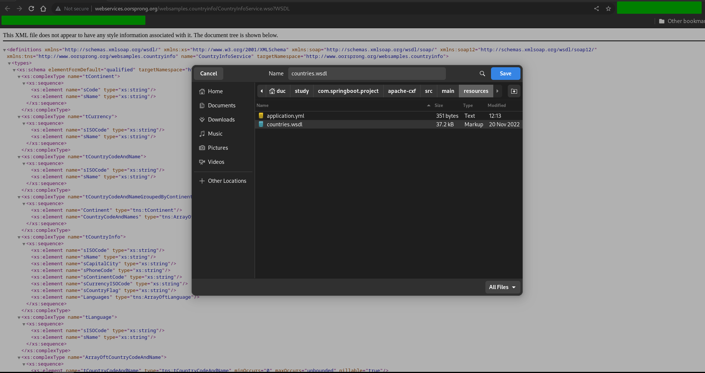
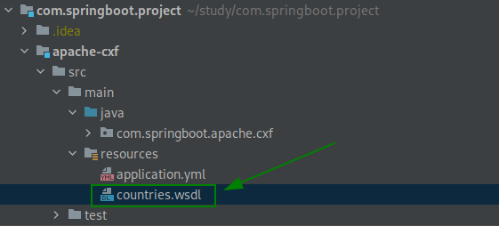
Dependencies#
- We need to add some dependencies for using
apache cxfin our Spring Boot project as below.
| pom.xml | |
|---|---|
1 2 3 4 5 6 7 8 9 10 11 | |
- We also need to add the plugin for generate Java Classes from the
WSDLfile as below.
| pom.xml | |
|---|---|
1 2 3 4 5 6 7 8 9 10 11 12 13 14 15 16 17 18 19 20 21 22 23 24 25 26 27 28 29 30 31 | |
Generate Java Classes From WSDL File#
- So let's open the
terminal/command linethen runmvn compile, then Maven will read the filecountries.wsdlto generate java classes and put them into thepackagethat we have already defined in thepom.xml. - If you note that, java classes have been configured with many annotation of XML, So these class will be formatted as xml type when we transfer them to SOAP service.
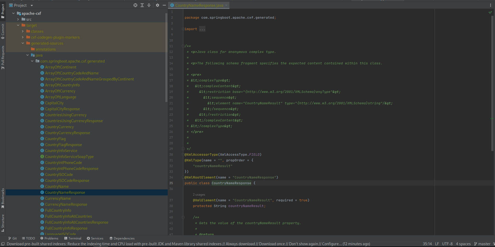
Configuration Properties#
- Firstly, we will need to create a configuration properties class to load some needed properties that we will configure in the
application.ymlfile by using@ConfigurationProperties, if you have not used it before then you can view Spring Boot With @ConfigurationProperties. - So let's create
CountryInfoProperties.javawhich will load some properties:hostname,protocol,portandapias below.
| CountryInfoProperties.java | |
|---|---|
1 2 3 4 5 6 7 8 9 10 11 12 13 14 15 16 17 18 19 | |
- In the
application.yml, we will put some configuration properties like below.
| application.yml | |
|---|---|
1 2 3 4 5 6 7 | |
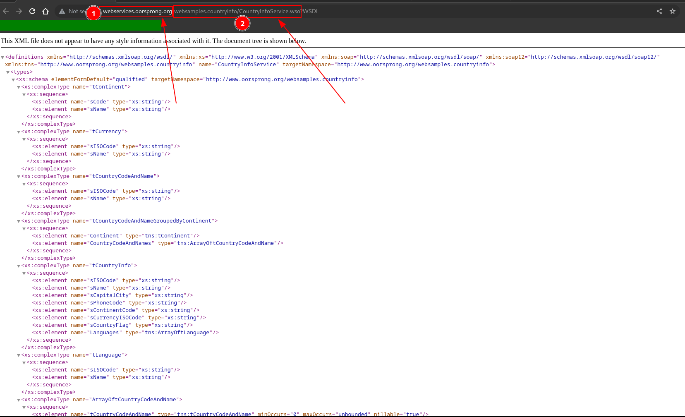
- So if you look into the URL that we used to download the
wsdlfile we can know theprotocol(No SSL so http),host,port(No SSL so the port is 80) and theapiand we will put them into the configuration above.
URL Factory#
- Next, with the
CountryInfoPropertiesabove we will use it in theUrlFactoryto build theURIfor calling WebServices as below.
| UrlFactory.java | |
|---|---|
1 2 3 4 5 6 7 8 9 10 11 12 13 14 15 16 17 18 19 20 21 22 23 24 25 26 27 | |
- As you can see, we will all configuration properties that we put in the
application.ymlto build the URI.
Client Configuration#
- Next, we will configure the client for calling Soap WebServices. If you look into the generated code by
Apache CXFyou can see there is an interface like this.
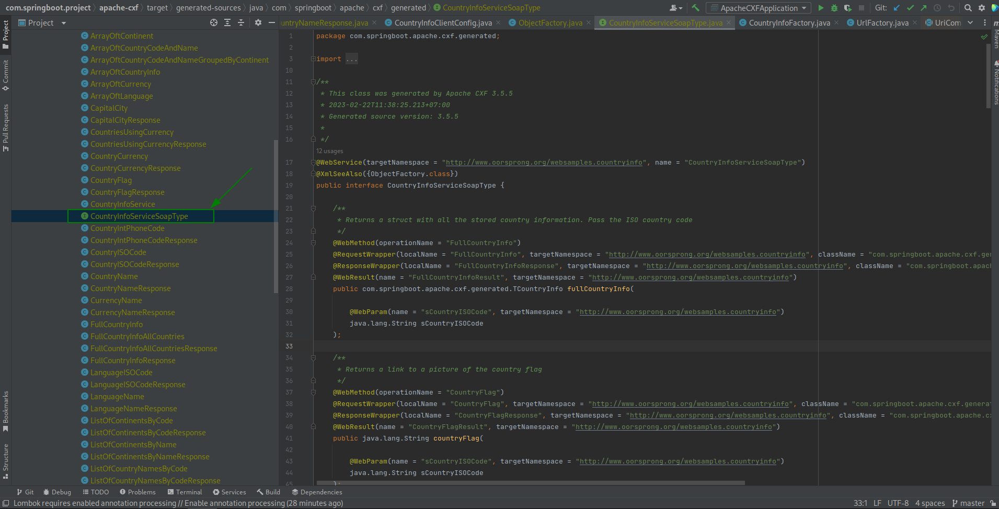
-
So this interface represents a SOAP WebService client that communicates with a WebService provider. If you look into every method you can see each method has annotations such as @WebMethod, @WebParam, @WebResult, @RequestWrapper, and @ResponseWrapper. These annotations are used to specify the SOAP message format and details.
-
Then we also see there is a generated java class that is annotation with annotation
@WebServiceClientas below.
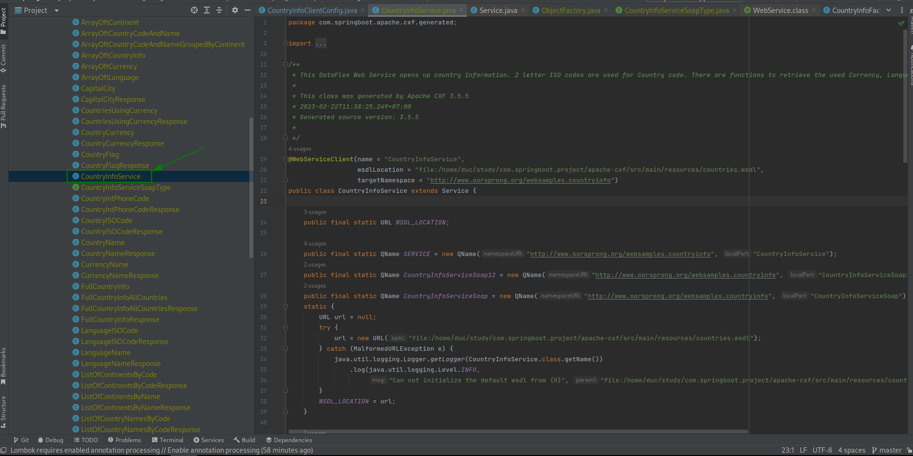
-
So this class
CountryInfoServiceis a generated WebService client that allows Java applications to interact with a SOAP-based WebService. The purpose of this class is to provide a Java interface for a client to access the web service's functions to retrieve information. If you look into this class, you can see the methodgetPortwill return the SOAP WebService client interface above. -
Now, We will configure it for calling SOAP WebService. Let's create a configuration class for SOAP WebService client as below.
package com.springboot.apache.cxf.config;
import com.springboot.apache.cxf.factory.UrlFactory;
import com.springboot.apache.cxf.generated.CountryInfoService;
import com.springboot.apache.cxf.generated.CountryInfoServiceSoapType;
import com.springboot.apache.cxf.generated.ObjectFactory;
import lombok.RequiredArgsConstructor;
import org.springframework.beans.factory.annotation.Autowired;
import org.springframework.context.annotation.Bean;
import org.springframework.context.annotation.Configuration;
import javax.xml.ws.BindingProvider;
import java.util.Map;
@Configuration
@RequiredArgsConstructor(onConstructor = @__(@Autowired))
public class CountryInfoClientConfig {
private final UrlFactory urlFactory;
@Bean
public CountryInfoServiceSoapType countryInfoServiceSoapType() {
CountryInfoService countryInfoService = new CountryInfoService();
CountryInfoServiceSoapType countryInfoServiceSoapType = countryInfoService.getCountryInfoServiceSoap();
Map<String, Object> requestContext = ((BindingProvider) countryInfoServiceSoapType).getRequestContext();
requestContext.put(BindingProvider.ENDPOINT_ADDRESS_PROPERTY, this.urlFactory.buildCountryInfoWebServiceUrl());
return countryInfoServiceSoapType;
}
@Bean
public ObjectFactory countryInfoServiceSoapTypeFactory() {
return new ObjectFactory();
}
}
- Firstly, we will create an instance of
CountryInfoService. Then from this instance we will get the instanceCountryInfoServiceSoapType. Then we will set the request URL for it by using theUrlFactorythat we created in the step above and return it as a beancountryInfoServiceSoapType. - Secondly, we will create a bean
countryInfoServiceSoapTypeFactorywith new instanceObjectFactory. InApache CXF, theObjectFactoryis a class that is generated from the XML schema file and is used to create instances of the JAXB-generated classes that represent the schema elements.- In other words, the
ObjectFactoryis responsible for creating instances of the classes that correspond to the XML elements defined in the schema. This is necessary because JAXB classes are typically generated as plain Java classes without any constructors. Instead, JAXB provides theObjectFactoryclass to create instances of these classes. - By creating a bean for the
ObjectFactory, we can inject it into other beans or components that require it to create instances of the JAXB-generated classes. This can be useful when working with SOAP web services or other XML-based technologies that rely on JAXB to serialize and deserialize XML data.
- In other words, the
Utility Class#
- An utility class is helpful for us to use for mapping request objects for calling Soap WebService or response objects from Soap WebService. So let's create the Utility java class as below.
| CountryInfoFactory.java | |
|---|---|
1 2 3 4 5 6 7 8 9 10 11 12 13 14 15 16 17 18 19 20 21 22 23 | |
- In this
CountryInfoFactoryutility class we will have two methods which are used for mapping result objects from Soap WebService to our response DTO classes.
Service#
- Now, let's create a service class for calling Soap WebService by using the configured Soap WebService client that we configured before. Now, we will inject the
CountryInfoServiceSoapTypeclient into our service and use it as below.
| CountryCodeHandler.java | |
|---|---|
1 2 3 4 5 6 7 8 9 10 11 12 13 14 15 16 17 18 19 20 21 22 23 24 25 26 27 28 29 30 31 32 33 34 35 36 37 38 39 40 41 42 | |
- There are many api that we can use in
CountryInfoServiceSoapTypebut in this example we just use 2 of them, they arecountryNameandlistOfCountryNamesGroupedByContinent.
Controller#
- Finally, we just need to create a controller class and inject the
CountryCodeHandlerservice that we created in the step above for using.
| WebServicesController.java | |
|---|---|
1 2 3 4 5 6 7 8 9 10 11 12 13 14 15 16 17 18 19 20 21 22 23 24 25 26 27 28 29 30 | |
Testing#
- Now, let's start our Spring Boot application and call two apis for testing. You should see the successful results as below.
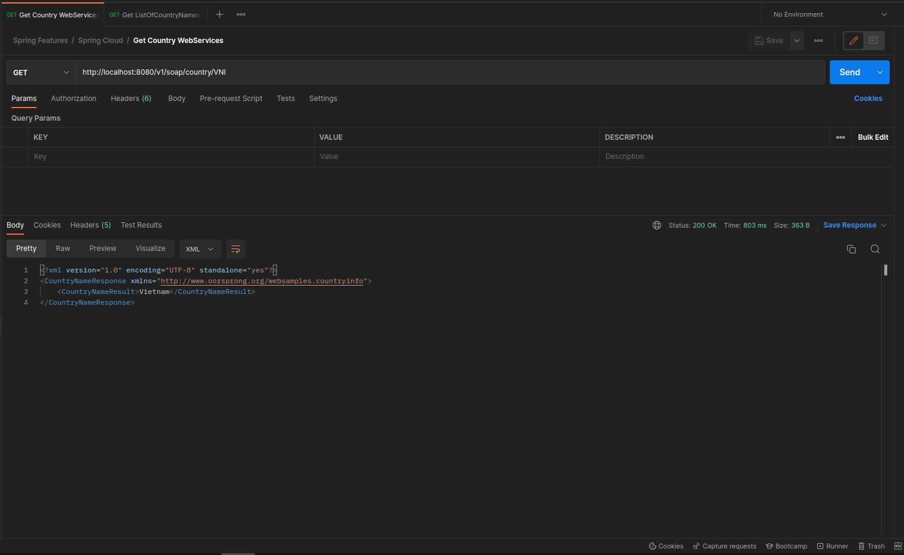
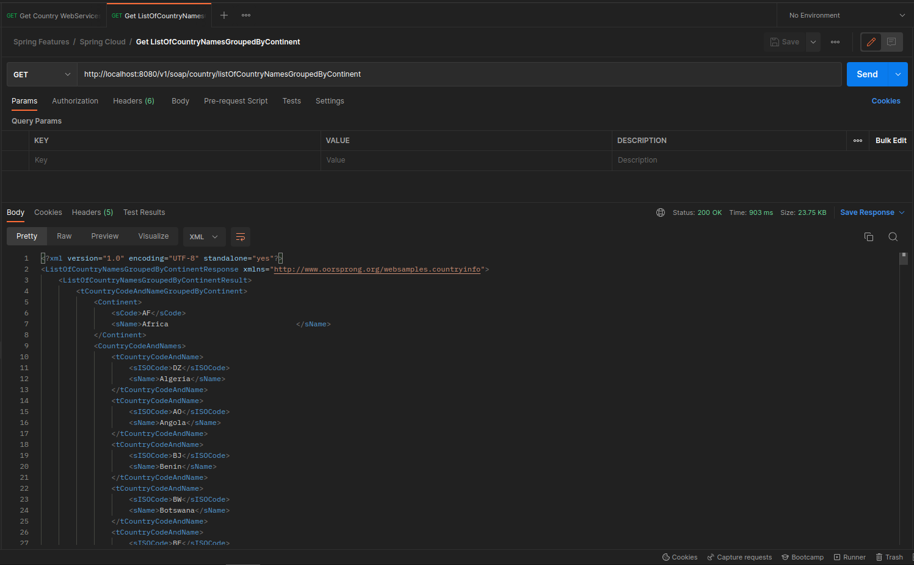
Handle Exception With Apache CXF#
- Okay, we have finished implementing the happy case, but for the case that we getting errors from the Soap WebService like Service is unavailable or not found, how we can handle it?
- Let's take an example, if we change api or the hostname in the
application.ymland call the Soap WebService again, you will always receive the 500 error as below.
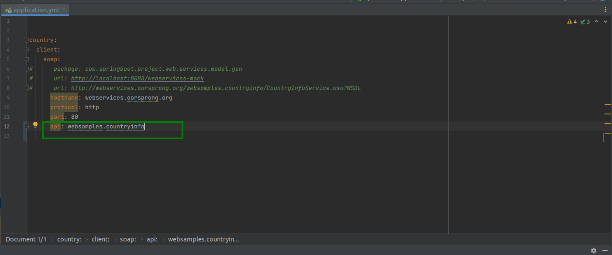
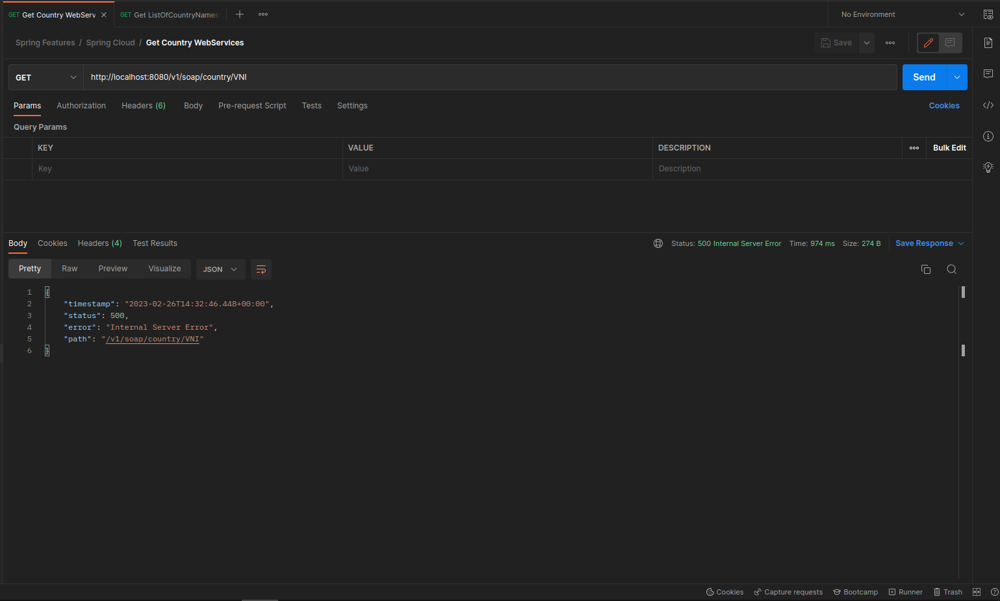
- So, this is not true and it is hard for developers to detect the issues when working with Soap WebService. Then handling the exception with Apache CXF is important and we should practice with it.
Add Custom Exception#
- Firstly, let's create a custom exception which contains some information about the error as below.
1 2 3 4 5 6 7 8 9 10 11 12 13 14 15 16 17 18 19 20 21 22 | |
- With this custom exception we can use it to store information that we want to extract when got issues with calling SOAP WebService.
Error Response Body#
- Next, we will create an simple error DTO which will be the error response body for clients who is using apis from our Spring Boot application.
1 2 3 4 5 6 7 8 9 10 11 12 13 14 15 16 17 18 | |
Exception Handler#
- Now, We will create an exception handler class named
GlobalExceptionHandlerwhich will extends fromResponseEntityExceptionHandlerclass, by default theResponseEntityExceptionHandlerwill provide an@ExceptionHandlermethod for handling internal Spring MVC exceptions.
| GlobalExceptionHandler.class | |
|---|---|
1 2 3 4 5 6 7 8 9 10 11 12 13 14 15 16 17 18 19 20 21 22 23 24 25 26 27 28 29 30 31 32 33 34 35 36 37 38 39 40 41 42 43 | |
-
As you can see, we will create 2 methods. The first method
technicalExceptionHandleris used for catching all exceptions with typeTechnicalExceptionand then we will extracted information from it for building response body which is theErrorDetailDTO class. Like wise, the second methodexceptionHandleris used for catching all other exception types which are notTechnicalException. -
If you have not know about how to handle exceptions in Spring Boot application. You can view this Spring Boot With Exception Handler And Message Source.
Utility Class#
- Next, we will need to update the utility class for extracting information and building the
TechnicalException. So let's add some more methodsbuildTechnicalException,getResponseCode,getEndpointandgetResponseHeadersas below.
package com.springboot.apache.cxf.factory;
import com.springboot.apache.cxf.exception.TechnicalException;
import com.springboot.apache.cxf.generated.ArrayOftCountryCodeAndNameGroupedByContinent;
import com.springboot.apache.cxf.generated.CountryInfoServiceSoapType;
import com.springboot.apache.cxf.generated.CountryNameResponse;
import com.springboot.apache.cxf.generated.ListOfCountryNamesGroupedByContinentResponse;
import lombok.experimental.UtilityClass;
import lombok.extern.slf4j.Slf4j;
import org.apache.commons.lang3.exception.ExceptionUtils;
import javax.xml.ws.BindingProvider;
import javax.xml.ws.handler.MessageContext;
@Slf4j
@UtilityClass
public class CountryInfoFactory {
public CountryNameResponse mapCountryNameResponse(String countryName) {
CountryNameResponse countryNameResponse = new CountryNameResponse();
countryNameResponse.setCountryNameResult(countryName);
return countryNameResponse;
}
public ListOfCountryNamesGroupedByContinentResponse mapListOfCountryNamesGroupedByContinentResponse(ArrayOftCountryCodeAndNameGroupedByContinent response) {
ListOfCountryNamesGroupedByContinentResponse listOfCountryNamesGroupedByContinentResponse = new ListOfCountryNamesGroupedByContinentResponse();
listOfCountryNamesGroupedByContinentResponse.setListOfCountryNamesGroupedByContinentResult(response);
return listOfCountryNamesGroupedByContinentResponse;
}
public TechnicalException buildTechnicalException(CountryInfoServiceSoapType client, Exception ex) {
return new TechnicalException(
ex.getMessage(),
getResponseCode(client),
getEndpoint(client),
getResponseHeaders(client),
ExceptionUtils.getRootCauseMessage(ex));
}
private Integer getResponseCode(CountryInfoServiceSoapType countryClient) {
BindingProvider bindingProvider = (BindingProvider) countryClient;
Integer responseCode = (Integer) bindingProvider.getResponseContext().get(MessageContext.HTTP_RESPONSE_CODE);
log.info("Error Code: {}", responseCode);
return responseCode;
}
private String getEndpoint(CountryInfoServiceSoapType countryClient) {
BindingProvider bindingProvider = (BindingProvider) countryClient;
String endpoint = (String) bindingProvider.getRequestContext().get(BindingProvider.ENDPOINT_ADDRESS_PROPERTY);;
log.info("Error Endpoint: {}", endpoint);
return endpoint;
}
private String getResponseHeaders(CountryInfoServiceSoapType countryClient) {
BindingProvider bindingProvider = (BindingProvider) countryClient;
Object objectHeaders = bindingProvider.getResponseContext().get(MessageContext.HTTP_RESPONSE_HEADERS);
return String.valueOf(objectHeaders);
}
}
- So, to build the
TechnicalException, we will need to extract some information from failed response when we call to the SOAP WebService. To to that we can cast theCountryInfoServiceSoapTypeSOAP WebService client interface from the input param to theBindingProvider. Then from theBindingProviderwe can easily usegetRequestContextorgetResponseContextfor extracting information from the request or response of the SOAP WebService call respectively. - We also need the
Exceptionas an input param to extract the errormessageandrootCause.
Throwing Custom Exception#
- Now, Let's update throwing exception in the Service class as below.
package com.springboot.apache.cxf.service;
import com.springboot.apache.cxf.factory.CountryInfoFactory;
import com.springboot.apache.cxf.generated.*;
import lombok.RequiredArgsConstructor;
import lombok.extern.slf4j.Slf4j;
import org.springframework.beans.factory.annotation.Autowired;
import org.springframework.stereotype.Service;
@Slf4j
@Service
@RequiredArgsConstructor(onConstructor = @__(@Autowired))
public class CountryCodeHandler {
private final CountryInfoServiceSoapType countryClient;
public CountryNameResponse getCountryName(String countryISO) {
try {
String countryName = this.countryClient.countryName(countryISO);
return CountryInfoFactory.mapCountryNameResponse(countryName);
} catch (Exception e) {
throw CountryInfoFactory.buildTechnicalException(countryClient, e);
}
}
public ListOfCountryNamesGroupedByContinentResponse getListOfCountryNamesGroupedByContinent() {
try {
ArrayOftCountryCodeAndNameGroupedByContinent response = this.countryClient.listOfCountryNamesGroupedByContinent();
return CountryInfoFactory.mapListOfCountryNamesGroupedByContinentResponse(response);
} catch (Exception e) {
throw CountryInfoFactory.buildTechnicalException(countryClient, e);
}
}
}
Testing#
- Finally, Let's change api or the hostname in the
application.ymland call the Soap WebService again, you will always receive the 500 error as below.
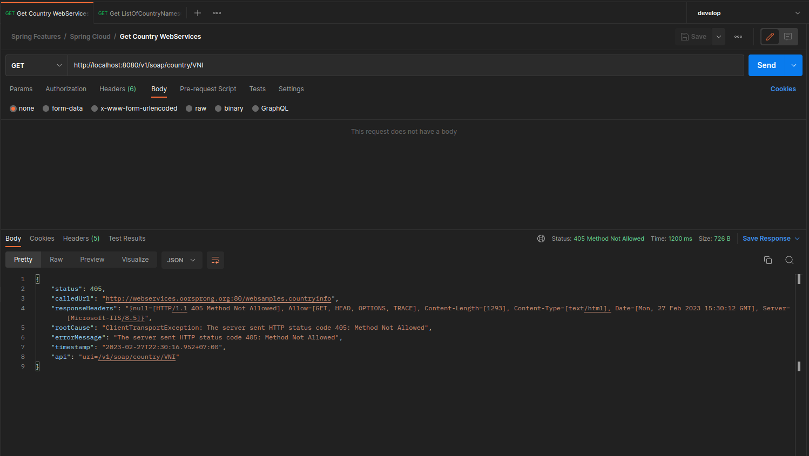
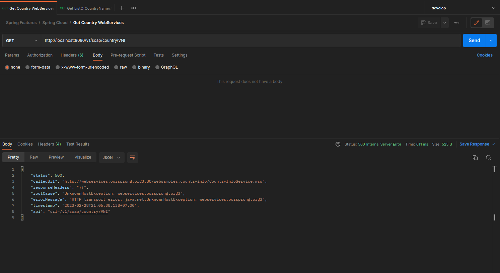
See Also#
- Web Services
- Spring Boot With Web Services
- Spring Cloud OpenFeign With Web Services
- Spring Boot With Exception Handler And Message Source
- Spring Boot With @ConfigurationProperties
- Spring Overview